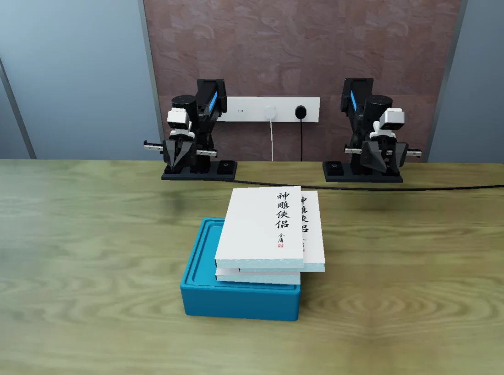
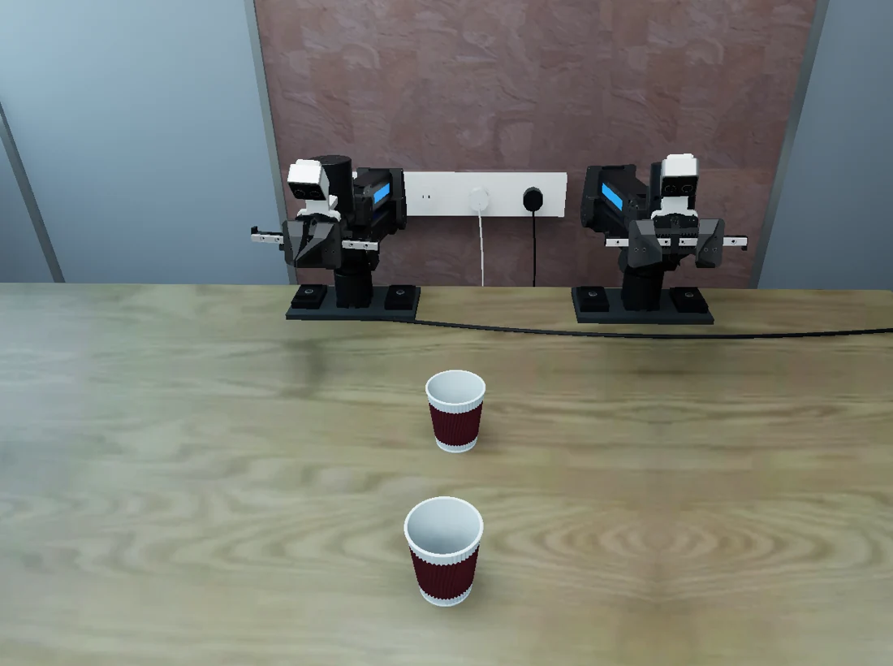

PAIRED SIM–REAL EVALUATION
General-Purpose
Foundation Models
for Contact-Rich
Manipulation.
A Paired Sim–Real Evaluation of GPT-6 Astra
A familiar tabletop. A demanding test of contact.
Explore the tasks, inspect the initial conditions,
and reproduce the evaluation.
01 / THE TASKS
Small motions.
Meaningful differences.
From insertion to pouring, wiping and sweeping.
Inspect actual simulator initial states and switch
between independently selectable settings.
Extract the middle book


These are initial-state renderings, not success demonstrations. Variant 01 names a preserved alternative configuration; some Level 3 variants also differ in scoring or budget. The task command shows a plan without calling a model.
02 / THE PROTOCOL
Make the conditions
part of the result.
Language and images drive the policy.
Motion planning executes actions.
Physical measurements evaluate the outcome.
Observe
Task instruction, camera images, robot state and execution feedback.
Act
Structured model commands, validated and executed through the shared robot stack.
Evaluate
Independent task-specific criteria, recorded with calls, timing and outcomes.
The planner and evaluator use simulator geometry. Model input is a separate interface; the system should not be described as a policy without execution or task-specific evaluation machinery.
Original and alternative settings remain separate. Real-robot conditions, including skill and history access, must be recorded independently for a paired comparison.
Read the full protocol ↗03 / REPRODUCE
From a clean checkout
to a checked scene.
Versioned configurations. Verified assets.
A shared execution stack for all 32 settings.
python -m pip install -e '.[test]'
python tools/verify_runtime_assets.py --usd
python tools/release/check_task_contract.py
python tools/reproduce.py --tasks L2-03_variant01This prints a plan. Configure Isaac Sim 5.1, cuRobo and model access before adding --execute.
RESEARCH SOFTWARE
A shared starting point.
General-Purpose Foundation Models for Contact-Rich Manipulation:
A Paired Sim–Real Evaluation of GPT-6 Astra